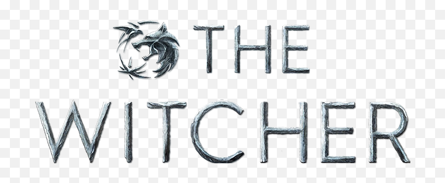

Vikings
The Witcher (em polonês, Wiedźmin) é uma série de televisão via streaming estadunidense-polonesa de drama e fantasia, criada por Lauren Schmidt Hissrich, baseada na série de livros do escritor polonês Andrzej Sapkowski. Situado em uma terra fictícia de inspiração medieval conhecida como "o continente", The Witcher explora a lenda de Geralt de Rivia e da Princesa Cirila, que estão ligados um ao outro pelo destino. A série é estrelada por Henry Cavill, Freya Allan e Anya Chalotra.
A primeira temporada consistiu em oito episódios e foi lançada na Netflix em 20 de dezembro de 2019. Foi baseada em The Last Wish e Sword of Destiny, que são coleções de contos que precedem a saga principal de Wiedźmin. A segunda temporada, composta por oito episódios, foi lançada em 17 de dezembro de 2021. Em setembro de 2021, a Netflix renovou a série para uma terceira temporada. Um filme de animação, The Witcher: Nightmare of the Wolf, foi lançado em 23 de agosto de 2021, enquanto uma minissérie prequela, The Witcher: Blood Origin, foi lançada em 2022.

Logotipo da série de televisão The Witcher.
Premissa
Geralt de Rivia (Cavill) é um bruxo, um mutante com poderes especiais que mata monstros por dinheiro. A Terra está num estado de caos enquanto o império de Nilfgaard procura expandir o seu território. Entre os refugiados desta luta está Cirilla (Freya Allan), também chamada Ciri, a Princesa de Cintra, que está sendo perseguida por Nilfgaard. Ela e o Geralt estão destinados um ao outro. Em suas aventuras Geralt também conhece Yennefer de Vengerberg (Anya Chalotra), uma feiticiera.
Elenco
Elenco Principal
Henry Cavill como Geralt de Rivia, um caçador de monstros magicamente melhorado conhecido como um "bruxo". A princesa Ciri de Cintra é seu "destino".
Freya Allan como Ciri, a princesa de Cintra, neta da rainha Calanthe e filha de Pavetta, da qual herdou o Sangue de Ancião. Ela está ligada ao Geralt pelo destino.
Eamon Farren como Cahir Mawr Dyffryn aep Ceallach, apelidado de "Cavaleiro Negro", um comandante do exército Nilfgaardiano que lidera a invasão de Cintra e a caça a Cirilla.
Anya Chalotra como Yennefer de Vengerberg, uma feiticeira metade elfa que tem um quarto da idade que aparenta ter.
Joey Batey como Jaskier, uma viajante que faz amizade com Geralt e o acompanha em seu caminho.
MyAnna Buring como Tissaia de Vries, mentora para Yennefer e a reitora de Aretuza, uma academia de treinamento para mulheres magas.
Mimî M. Khayisa como Fringilla Vigo, uma feiticeira que treinou ao lado de Yennefer. Ela eventualmente lidera a invasão nilfgaardiana ao lado de Cahir.
Anna Shaffer como Triss Merigold, uma feiticeira, a maga da corte de Temeria e conselheira do Rei Foltest.
Royce Pierreson como Istredd, um feiticeiro e historiador adepto que é amigo de Yennefer em Aretuza.
Wilson Mbomio como Dara, um menino duende refugiado que Cirilla é amigo de Cirilla após o massacre de Cintra.
Mahesh Jadu como Vilgefortz de Roggeveen, um feiticeiro carismático que reúne os magos do norte para deter o exército invasor Nilfgaardiano em Sodden.
Tom Canton como Filavandrel, o último rei dos Elfos. (temporada 2; convidado na temporada 1)
Mecia Simson como Francesca Findabair, uma feiticeira elfa. (temporada 2)
Kim Bodnia como Vesemir, o bruxo vivo mais antigo e o mentor e figura paterna de Geralt. (temporada 2)
Elenco Recorrente
Jodhi May como Rainha Calanthe, governante do Reino de Cintra e avó da Princesa Cirilla.
Adam Levy como Mousesack, membro da corte druid de Cintra e conselheiro da rainha Calanthe.
li>Björn Hlynur Haraldsson como Rei Eist Tuirseach, marido da Rainha Calanthe e padrasto de Cirilla. (temporada 1).
Lars Mikkelsen como Stregobor, mago residente na cidade de Blaviken e o Reitor de Ban Ard, a academia de magos masculinos.
Therica Wilson-Read como Sabrina Glevissig, uma feiticeira que treinou ao lado de Yennefer.
Terence Maynard como Artorius Vigo, mago da corte de Toussaint e tio de Fringilla.
Judit Fekete como Vanielle de Brugge, uma feiticeira e uma das magas que lutaram durante a Batalha de Sodden Hill. (temporada 1).
Paul Bullion como Lambert, um bruxo da Kaer Morhen e amigo de Geralt. (temporada 2).
Yasen Atour como Coën, bruxa de Kaer Morhen e amigo de Geralt. (temporada 2).
Ania Marson como Voleth Meir, um demônio que veio para o continente com a Conjunção das Esferas, que se alimenta de dor e medo. (temporada 2).
Graham McTavish como Sigismund Dijkstra, chefe da Inteligência Redaniana e aliado de Philippa Eilhart. (temporada 2).
Ed Birch como Vizimir, o rei da Redania. (temporada 2).
Chris Fulton como Rience, um mago renegado que se dedica a uma caçada a Ciri. (temporada 2).
Aisha Fabienne Ross como Lydia van Bredevoort, a ligação de Rience que o tira da prisão sob as ordens de seu mestre. (temporada 2).
Kaine Zajaz como Gage, irmão de Francesca. (temporada 2)
Episódios
| Temporada |
Episódios |
Originalmente Exibido |
| 1 |
8 |
20 de dezembro de 2019 |
| 2 |
8 |
17 de dezembro de 2021 |